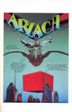

The Legend of Arzach Comic
The
Legend of Arzach |
|
 |
Moebius later revisited the character Arzach with a story called The Legend of Arzach. This later story contains dialogue and is more light hearted, compared to the other Arzach comics. |